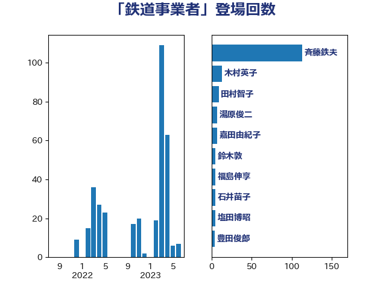

単語「鉄道事業者」

| 斉藤鉄夫 | 公明党 | 113 回 |
| 木村英子 | れいわ新選組 | 13 回 |
| 田村智子 | 日本共産党 | 9 回 |
| 湯原俊二 | 立憲民主党 | 7 回 |
| 嘉田由紀子 | 無所属 | 7 回 |
| 鈴木敦 | 国民民主党 | 5 回 |
| 福島伸享 | 無所属 | 5 回 |
| 石井苗子 | 日本維新の会 | 5 回 |
| 塩田博昭 | 公明党 | 5 回 |
| 豊田俊郎 | 自由民主党 | 4 回 |
| 西田昭二 | 自由民主党 | 4 回 |
| 神津たけし | 立憲民主党 | 4 回 |
| 森屋隆 | 立憲民主党 | 4 回 |
| 木村次郎 | 自由民主党 | 4 回 |
| 加藤鮎子 | 自由民主党 | 4 回 |
| おおつき紅葉 | 立憲民主党 | 4 回 |
| 高橋千鶴子 | 日本共産党 | 3 回 |
| 里見隆治 | 公明党 | 3 回 |
| 三上えり | 立憲民主党 | 3 回 |
| 谷公一 | 自由民主党 | 2 回 |
| 末次精一 | 立憲民主党 | 2 回 |
| 斎藤アレックス | 国民民主党 | 2 回 |
| 小林鷹之 | 自由民主党 | 2 回 |
| 宮路拓馬 | 自由民主党 | 2 回 |
| 大岡敏孝 | 自由民主党 | 2 回 |
| 伊藤渉 | 公明党 | 2 回 |
| 高橋光男 | 公明党 | 1 回 |
| 長浜博行 | 無所属 | 1 回 |
| 野田国義 | 立憲民主党 | 1 回 |
| 西岡秀子 | 国民民主党 | 1 回 |
| 菅家一郎 | 自由民主党 | 1 回 |
| 竹詰仁 | 国民民主党 | 1 回 |
| 石川香織 | 立憲民主党 | 1 回 |
| 石川大我 | 立憲民主党 | 1 回 |
| 田村貴昭 | 日本共産党 | 1 回 |
| 清水真人 | 自由民主党 | 1 回 |
| 浜野喜史 | 国民民主党 | 1 回 |
| 松野博一 | 自由民主党 | 1 回 |
| 末松義規 | 立憲民主党 | 1 回 |
| 木原稔 | 自由民主党 | 1 回 |
| 星野剛士 | 自由民主党 | 1 回 |
| 山口那津男 | 公明党 | 1 回 |
| 室井邦彦 | 日本維新の会 | 1 回 |
| 城井崇 | 立憲民主党 | 1 回 |
| 吉井章 | 自由民主党 | 1 回 |
| 古川直季 | 自由民主党 | 1 回 |